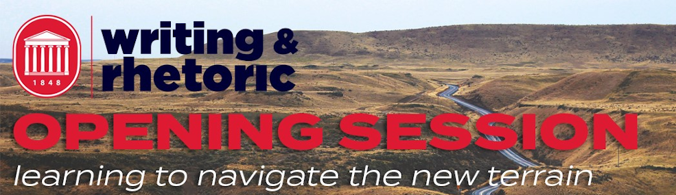

Fall 2020 Opening Session¶
The Fall 2020 Opening Session included synchronous and asynchronous components. On-Demand sessions were developed and recorded by DWR faculty and uploaded for Panopto for teachers to access at any time. Expand the link below to view the On-Demand sessions.
Previously recorded workshop sessions are available on-demand starting Monday August 17. Click “View Workshop Stream” to view the session in Panopto.
View Sessions on Demand
100/101 Model Syllabus: Guy Krueger and Chip Dunkin discuss the new model syllabus and what policy sections you may want to adjust. (View Workshop Stream)
Blackboard Template Tutorial: Andrew Davis walks you through the WRIT 100/101 Blackboard Template and demonstrates how to customize it. Stream VideoView Workshop Stream (View Workshop Stream)
Resilient Teaching: Eliot Parker, Carrie McCormick, and Josh Eyler introduce the concept of resilient teaching and share what they learned from this summer’s learning community. (View Workshop Stream)
Speaking Center: Ellie Moore introduces the Speaking Center and explains how it will operate this fall. (View Workshop Stream)
Student Retention: Marc Watkins and Guy Krueger discuss student retention strategies for first-year students. (View Workshop Stream)
To the Ballot Box Initiative: Don Unger shares the work of the Community Engagement Committee with the “To the Ballot Box” initiative. (View Workshop Stream)
Using Microsoft Teams: Andrew Davis demonstrates the basic collaboration tools and features of Microsoft Teams. (View Workshop Stream)
WRIT 102 Curriculum Revision: Wendy Goldberg will introduce changes to the WRIT 102 curriculum that include critical thinking projects. (View Workshop Stream)
Writing Center: Rachel Johnson, Claire Mischker, Deidra Jackson, and Jeanine Rauch discuss the new Writing Center website and the plans the centers have for the Fall. (View Workshop Stream)